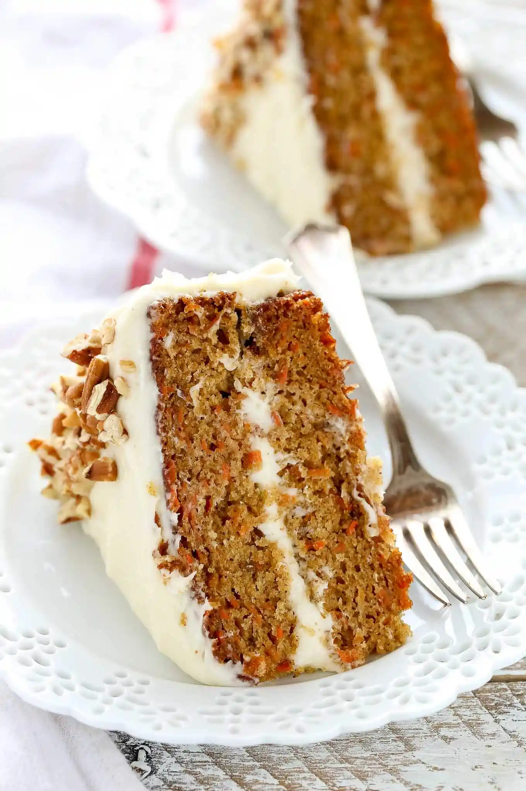

Back
Carrot Cake

Description
A delicious carrot cake
Good for the typical events
Ingredients:
The carrot cake
- 370g of carrots
- 320g of sugar
- 3dl of neutral oil
- 4 egs
- 300g flour
- 1 spoon of cinnamon
- 2 small spoon of baking powder
- 1 small spoon of salt
The cream cheese
- 50g of butter
- 150g neutral cream cheese 25% fat
- 130g powdered sugar
- 1 small spoon of vanilla sugar
Steps:
The carrot cakes step
- preheat the oven to 175 degrees warm air
- peel the carrots
- whip sugar and oil to a creamy mass, then one a the time add the egs, until the the sugar no longer can be felt or heart at the bottom
- shift the flour into a bowl
- mix the cinnamon,flour,baking powder and salt in to the dough, then turn the peeled carrots into
- put baking papier into a spring loaded form(20cm i diameter) then put the dough in
- bak for 60 min
- good ide to keep an eye out, every oven is different
- to check if it is done, use a fork or knife, stick it in the cake if the dough isn't stuck to the object the cake i s done
The cream cheese steps
- whip the soft butter and cream chess together until it has a consistency
- add powdered sugar and vanilla sugar, small amount at the time,so you can control the sweetness and the bitterness.
- whip the an electrical whipper til the cream is smooth and without clumps
- when the cake is done cooling you can put the cream cheese on.